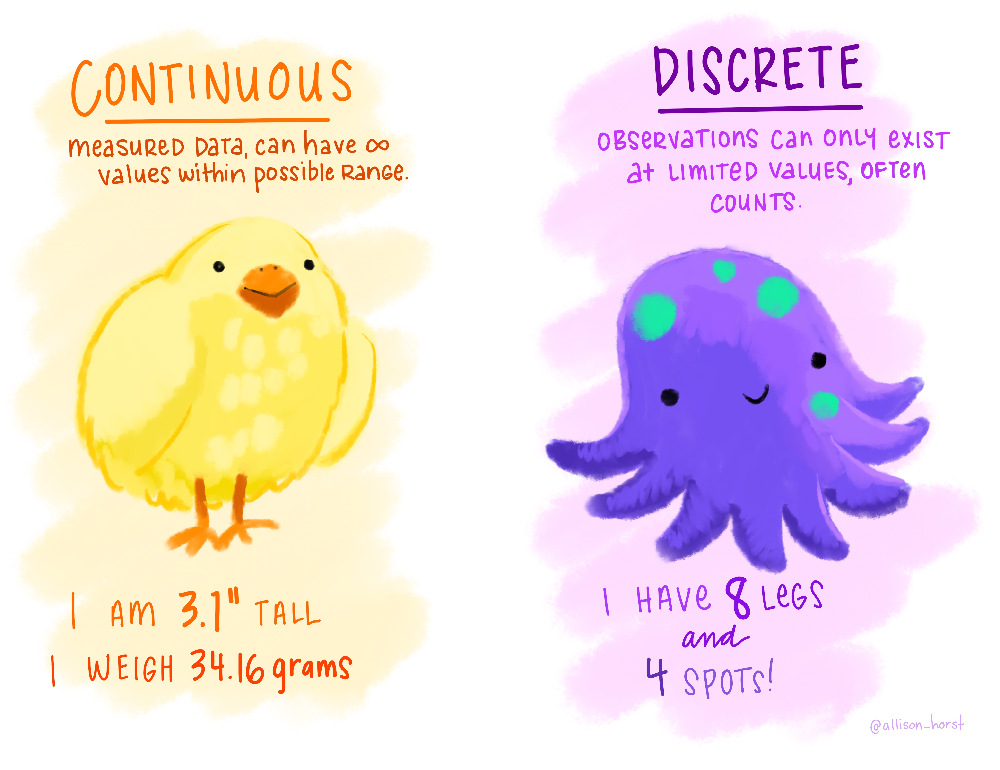
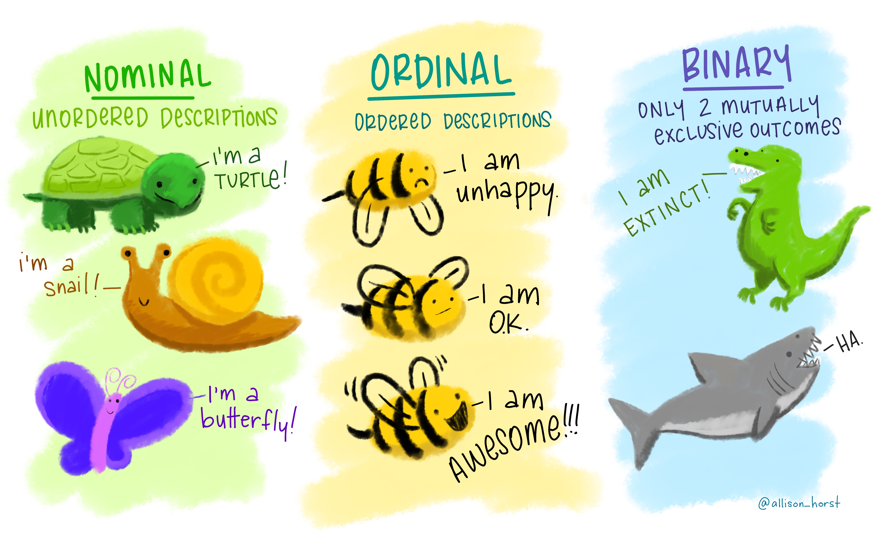

first_variable <- 302-intro-to-r
Introduction to R
Q&A
Q: What are some other important functions in R that we should keep in mind?
We’ll get to these today and Monday! The most important will be the verbs in the tidyverse - on Monday!
Q: Does Quarto take in / print code? Or is it primarily used just for text-based content?
It will display code as well as execute it on render. It’s for text and code.
Q: I’m curious about how we’ll be able to manipulate datasets using R, or if this is something we will end up doing. I wonder how using R will compare to using excel.
In lots of ways, Excel can do many of the things you can do with data in R; however, R has the advantage of being reproducible. This means you write the code once, but can execute it as many times as you want. This is unlike Excel, where each time you want to do something, you have to point/click to make it happen. And, there’s not a record of what’s been done, so being able to reproduce what someone else has done is nontrivial.
Q: I think I was confused as to the use of Quarto when we were running code on the console of Rstudio but I understood how Quarto is used as a source to save code, but im curious as to why the console was not made to save it.
Technically you can save your console, but for our purposes we’re not going to because it’s not particularly readable. Think of the console as a place to try things out, but anything you really want to save/keep/organize should go in a (quarto) document
Course Announcements
Due Dates:
- 🔘 Student survey (#finaid) due Fri 10/2 (11:59 PM)
- ⌨Lab 01 is due Friday - repos are available for those whose GitHub names I have
- if no lab01 available on GH, please either complete pre-course survey or email me (sellis@ucsd.edu) your GitHub username
- first lab is tomorrow (Th 5P)!
- 🔘 Lecture Participation survey “due” after class
Agenda
- Variables
- Operators
- Data in R
Variables & Assignment
Variables & Assignment
Variables are how we store information so that we can access it later.
. . .
Variables are created and stored using the assignment operator <-
The above stores the value 3 in the variable first_variable
. . .
Note: Other programming languages use = for assignment. R also uses that for assignment, but it is more typical to see <- in R code, so we’ll stick with that.
. . .
This means that if we ever want to reference the information stored in that variable later, we can “call” (mean, type in our code) the variable’s name:
first_variable[1] 3Variable Type
- Every variable you create in R will be of a specific type.
. . .
- R is dynamically typed: you don’t declare a type ahead of time. R sets the type when you assign a value (and the type can change if you reassign the variable).
. . .
- Determining the type of a variable with
class():
class(first_variable)[1] "numeric"Basic Variable Types
| Variable Type | Explanation | Example |
|---|---|---|
| character | stores a string | "cogs137", "hi!" |
| numeric | stores whole numbers and decimals | 9, 9.29 |
| integer | specifies integer | 9L (the L specifies this is an integer) |
| logical | Booleans | TRUE, FALSE |
| list | store multiple elements | list(7, "a", TRUE) |
Note: There are many more. We’ll get to some but not all in this course.
logical & character
logical - Boolean values TRUE and FALSE
class(TRUE)[1] "logical". . .
character - character strings
class("hello")[1] "character"class('students') # equivalent...but we'll use double quotes![1] "character". . .
numeric: double & integer
double - floating point numerical values (default numerical type)
class(1.335)[1] "numeric"class(7)[1] "numeric". . .
integer - integer numerical values (indicated with an L)
class(7L)[1] "integer". . .
vectors
The most basic data structure in R is the vector: an ordered collection of values that are all the same type.
c(1, 2, 3) # combine values with c()[1] 1 2 31:5 # shortcut for a sequence of integers[1] 1 2 3 4 5my_letters <- c("a", "b", "c")
length(my_letters)[1] 3class(my_letters)[1] "character". . .
A single value like 3 is just a vector of length 1.
lists
So far, every variable has been an atomic vector: it can hold many values, but they must all be the same type.
. . .
Lists are 1d objects that can contain any combination of R objects – including values of different types
mylist <- list("A", 7L, TRUE, 18.4)
mylist[[1]]
[1] "A"
[[2]]
[1] 7
[[3]]
[1] TRUE
[[4]]
[1] 18.4str(mylist)List of 4
$ : chr "A"
$ : int 7
$ : logi TRUE
$ : num 18.4Your Turn
Define variables of each of the following types: character, numeric, integer, logical, list
Put a green sticky on the front of your computer when you’re done. Put a pink if you want help/have a question.
Functions
class()(andView()&median()) were our first functions…but we’ll show a few more.
. . .
- Functions are (most often) verbs, followed by what they will be applied to in parentheses.
. . .
Functions are:
- available from base R
- available from packages you import
- defined by you
Helpful Functions
class()- determine high-level variable type
class(mylist)[1] "list"length()- determine how long an object is
# contains 4 elements
length(mylist)[1] 4str()- display the structure of an R object
str(mylist)List of 4
$ : chr "A"
$ : int 7
$ : logi TRUE
$ : num 18.4Coercion
A vector can only hold one type. If you combine different types, R coerces (converts) them to a common type – without any warning.
(This is separate from dynamic typing, which is about how a variable gets its type.)
. . .
🤔 Predict: What will each of these return?
c(1, "Hello")
c(FALSE, 3L)
c(1.2, 3L)Put a green sticky on the front of your computer when you have your predictions.
Coercion: Answers
c(1, "Hello")[1] "1" "Hello"c(FALSE, 3L)[1] 0 3c(1.2, 3L)[1] 1.2 3.0. . .
R converts to the most flexible type needed:
logical → integer → double → character
Missing Values
R uses NA to represent missing values in its data structures.
class(NA)[1] "logical". . .
NA is “contagious”: most calculations involving NA return NA…
mean(c(1, 2, NA))[1] NA. . .
…unless you tell R to remove missing values first:
mean(c(1, 2, NA), na.rm = TRUE)[1] 1.5Other Special Values
NaN | Not a number
0 / 0[1] NaNInf | Positive infinity
1 / 0[1] Inf-Inf | Negative infinity
-1 / 0[1] -InfOperators
Operators
At its simplest, R is a calculator. To carry out mathematical operations, R uses operators.
Arithmetic Operators
| Operator | Description |
|---|---|
+ |
addition |
- |
subtraction |
* |
multiplication |
/ |
division |
^ or ** |
exponentiation |
x %% y |
modulus (x mod y) 9%%2 is 1 |
x %/% y |
integer division 9%/%2 is 4 |
Arithmetic Operators: Examples
7 + 6 [1] 132 - 3[1] -14 * 2[1] 89 / 2[1] 4.5Reminder
Output can be stored to a variable
my_addition <- 7 + 6. . .
my_addition[1] 13Comparison Operators
These operators return a Boolean.
| Operator | Description |
|---|---|
< |
less than |
<= |
less than or equal to |
> |
greater than |
>= |
greater than or equal to |
== |
exactly equal to |
!= |
not equal to |
Comparison Operators: Examples
4 < 12[1] TRUE4 >= 3[1] TRUE6 == 6[1] TRUE7 != 6[1] TRUELogical Operators
Combine (or negate) TRUE/FALSE values. You’ll use these constantly to filter data.
&and:TRUEonly if both sides areTRUE|or:TRUEif either side isTRUE!not: flipsTRUE↔︎FALSE
(4 < 12) & (6 == 6)[1] TRUE(4 > 12) | (6 == 6)[1] TRUE!(6 == 6)[1] FALSEYour Turn
- Store your age (in years) in the variable
my_age. - Use arithmetic to calculate (roughly) how many days old you are. Store it in
days_old. - Use comparison and logical operators to check whether
days_oldis between 7,000 and 10,000.
Put a green sticky on the front of your computer when you’re done. Put a pink if you want help/have a question.
R Packages
Packages
- Install a package once per computer with
install.packages() - Load it in every session (and at the top of every Quarto document that uses it) with
library()
install.packages("package_name") # once
library(package_name) # every time. . .
Think of it like an app: you install it once, but you open it every time you want to use it.
. . .
In this course, most packages we’ll use have been installed for you already on datahub, so you will only have to load the package in (using library).
. . .
Question
Should install.packages() go in your Quarto document or in the console? Why?
Hint: Think back to our discussion on the first day about what the console is for vs. what a Quarto document is for…and what happens every time you render.
Data “sets”
Data “sets” in R
“set” is in quotation marks because it is not a formal data class
A tidy data “set” can be one of the following types:
tibbledata.frame
We’ll often work with
tibbles:readrpackage (e.g.read_csvfunction) loads data as atibbleby defaulttibbles are part of the tidyverse, so they work well with other packages we are using- they make minimal assumptions about your data, so are less likely to cause hard to track bugs in your code
Data frames
A data frame is the most commonly used data structure in R, they are list of equal length vectors (usually atomic, but can be generic). Each vector is treated as a column and elements of the vectors as rows.
A tibble is a type of data frame that … makes your life (i.e. data analysis) easier.
Most often a data frame will be constructed by reading in from a file, but we can create them from scratch.
df <- tibble(x = 1:3, y = c("a", "b", "c"))
class(df)[1] "tbl_df" "tbl" "data.frame"glimpse(df)Rows: 3
Columns: 2
$ x <int> 1, 2, 3
$ y <chr> "a", "b", "c"Data frames (cont.)
Columns (variables) in data frames are accessed with $:
dataframe$var_name. . .
class(df$x) # access variable type for column[1] "integer"class(df$y) [1] "character"Variable Types
Data stored in columns can include different kinds of information…which would require a different type (class) of variable to be used in R.

R Data Types:
- Continuous: numeric
- Discrete: integer or numeric (e.g., counts like number of cats)
Categorical data (next slide) are often stored as factors – we’ll cover these in a coming lecture.
Artwork by @allison_horst
Variable Types (cont.)
Sometimes data are non-numeric and store words. Even when that is the case, the data can be conveying different information.

R Data Types:
- Nominal: character
- Ordinal: factors
- Binary: logical OR numeric OR factors
Artwork by @allison_horst
Example: Cat lovers
A survey asked respondents their name and number of cats. The instructions said to enter the number of cats as a numerical value.
. . .
🚨 There is code ahead that we’re not going to discuss in detail today, but we will in coming lectures.
cat_lovers <- read_csv("https://raw.githubusercontent.com/COGS137/datasets/main/cat-lovers.csv")The Data
cat_lovers |>
datatable()The Question
How many respondents have a below average number of cats?
. . .
Giving it a first shot…
cat_lovers |>
summarise(mean = mean(number_of_cats))Warning: There was 1 warning in `summarise()`.
ℹ In argument: `mean = mean(number_of_cats)`.
Caused by warning in `mean.default()`:
! argument is not numeric or logical: returning NA# A tibble: 1 × 1
mean
<dbl>
1 NA. . .
💡 maybe there is missing data in the number_of_cats column!
Oh why will you still not work??!!
cat_lovers |>
summarise(mean_cats = mean(number_of_cats, na.rm = TRUE))Warning: There was 1 warning in `summarise()`.
ℹ In argument: `mean_cats = mean(number_of_cats, na.rm = TRUE)`.
Caused by warning in `mean.default()`:
! argument is not numeric or logical: returning NA# A tibble: 1 × 1
mean_cats
<dbl>
1 NA. . .
💡 What is the type of the number_of_cats variable?
Take a breath and look at your data
. . .
glimpse(cat_lovers)Rows: 60
Columns: 3
$ name <chr> "Bernice Warren", "Woodrow Stone", "Willie Bass", "Tyro…
$ number_of_cats <chr> "0", "0", "1", "3", "3", "2", "1", "1", "0", "0", "0", …
$ handedness <chr> "left", "left", "left", "left", "left", "left", "left",…Let’s take another look
Sometimes you need to babysit your respondents
cat_lovers |>
mutate(number_of_cats = case_when(name == "Ginger Clark" ~ 2,
name == "Doug Bass" ~ 3,
.default = as.numeric(number_of_cats)))Warning: There was 1 warning in `mutate()`.
ℹ In argument: `number_of_cats = case_when(...)`.
Caused by warning in `vec_case_when()`:
! NAs introduced by coercion# A tibble: 60 × 3
name number_of_cats handedness
<chr> <dbl> <chr>
1 Bernice Warren 0 left
2 Woodrow Stone 0 left
3 Willie Bass 1 left
4 Tyrone Estrada 3 left
5 Alex Daniels 3 left
6 Jane Bates 2 left
7 Latoya Simpson 1 left
8 Darin Woods 1 left
9 Agnes Cobb 0 left
10 Tabitha Grant 0 left
# ℹ 50 more rows. . .
⚠️ Notice the warning: as.numeric() couldn’t convert some values (the text answers) to numbers, so it made them NA. That’s R telling you your data had text in it! Here, case_when() replaces those rows, so it’s safe.
Always respect (& check!) data types
cat_lovers |>
mutate(number_of_cats = case_when(name == "Ginger Clark" ~ 2,
name == "Doug Bass" ~ 3,
.default = as.numeric(number_of_cats))) |>
summarise(mean_cats = mean(number_of_cats))# A tibble: 1 × 1
mean_cats
<dbl>
1 0.817Now that we know what we’re doing…
cat_lovers <- cat_lovers |>
mutate(number_of_cats = case_when(name == "Ginger Clark" ~ 2,
name == "Doug Bass" ~ 3,
.default = as.numeric(number_of_cats)))… store your data in a variable (here we’re overwriting the old cat_lovers tibble).
Answering the question
How many respondents have a below average number of cats?
cat_lovers |>
filter(number_of_cats < mean(number_of_cats)) |>
nrow()[1] 33. . .
filter() keeps only the rows that meet a condition (here, a comparison operator!). More on this in a coming lecture.
Moral of the story
If your data does not behave how you expect it to, type coercion upon reading in the data might be the reason.
Go in and investigate your data, apply the fix, save your data, live happily ever after.
Recap
- Always best to think of data as part of a tibble
- This plays nicely with the
tidyverseas well - Rows are observations, columns are variables
- This plays nicely with the
- What are the common variable types in R
- How do I create a variable of each type?
- When would I use each one?
- What is a vector, and why must its values all be the same type?
- Do I know how to determine the class/type of a variable?
- Can I explain dynamic typing? How is it different from coercion?
- Can I operate on variables and values using…
- arithmetic operators?
- comparison operators?
- logical operators?
- What does
NAdo in a calculation, and how do I handle it? - What are dataframes/tibbles? and why are they useful?
- What is the difference between installing and loading a package?